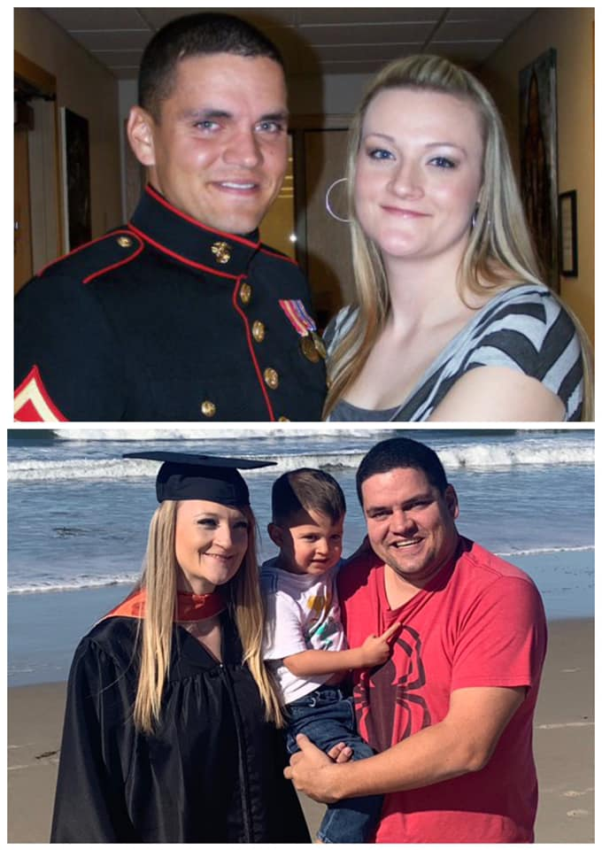

This is a site dedicated to the things I love.
This site is dedicated to the things I love. These are made up of things that I love doing such as; spending time with my family, eating good food, watching sports, and traveling around the world with my family.
Traveling
My family tries to save up money throughout the year in order to travel. One of the things we do is save money at birthdays. We do this by not having as much presents during birthdays. We also do about six months of research before booking a trip.
Family
Of course I love my family!! I could not be where I am today without them. I wanted to make this page as a tribute to them. They have supported me greatly as I returend to school to attain my Bachelors Degree in Business Management and Marketing. My Wife Desiree and my son Braxton are my main inspiration in life.
Sports
On of my favorite past-times is watching and playing sports. I love to watch football, basketball, baseball, hockey, and pretty much any sport that I can follow what is going on. I also love to run occasionaly, play flag-football, basketball when I can find a gym to play in, and golf too.
Food
Food is a passion of mine, I love to eat food and to make different dishes. I love to eat steak the most. I like just about anything except black licorice and horseradish.